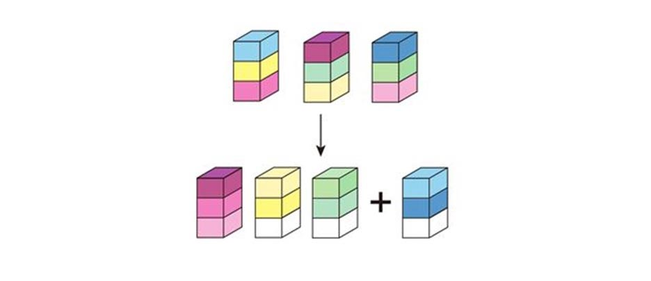
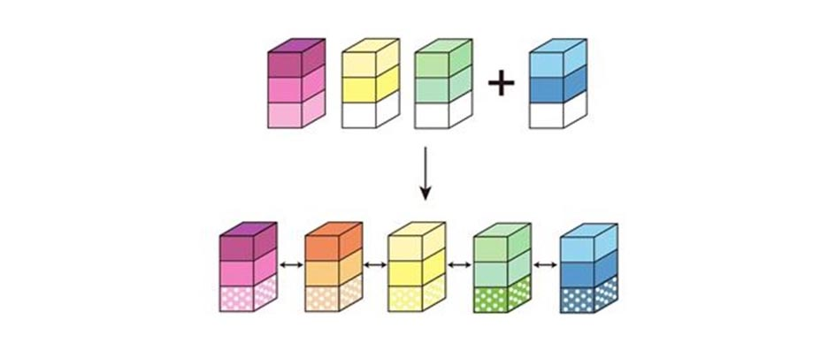
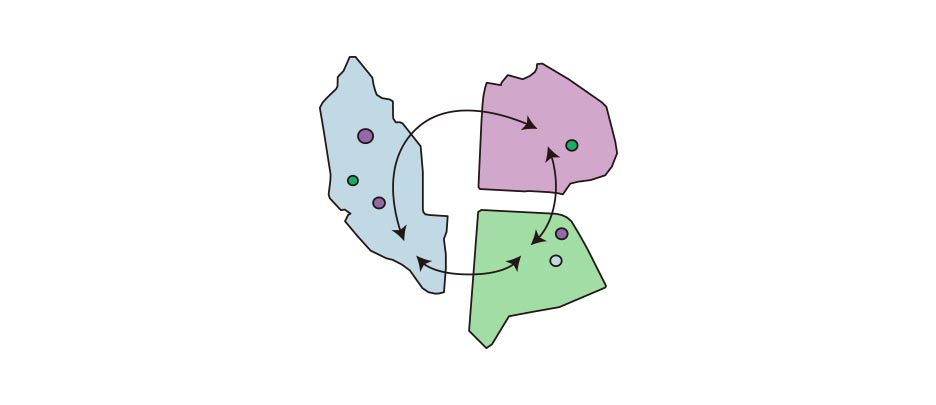
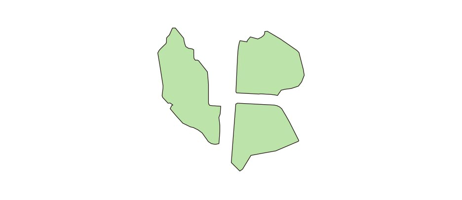

Collaboration
SKKU Campus renovation project
Seunggyun Han, Dongyeong Lee, Yuna Kinoshita, Akira Ooka
Design Recognition Award, 10th East Asia Urban Architecture Joint Studio, 2018
Objective
Upgrading a previous campus master plan for renovating the campus as an innovation district which can attract competent researchers and entrepreneurs.
Site of the project included existing university campuses, unused botanical gardens and reservoirs.
Main Concepts
"Making campus to more collaborative place"
We identified five factors (New knowledge, Creative thinking, Large Scale research space, Money, Exchanging Program) that young researchers and entrepreneurs may be interested in and found that they are all related to collaboration.

Strategies
1. Rearrangement Functions
If we gather relative departments, it is more easy to make a collaboration. And we can have several empty space which can be used various usage
2. Permeable Places
Making a new departement by collaboration of different departments, and creating permeable spaces in ground floor can make many communication
3. Make Connections
Transportation can make three different place more relatively. These connection will be make more exchanging between three place.
4. Make a one identity
We can make Sustainable(or Green) identity into three different place by using ecological technology in buildings and vehicles. If People feel these three place like one, there will be more communication..
Masterplan and scenarios of places